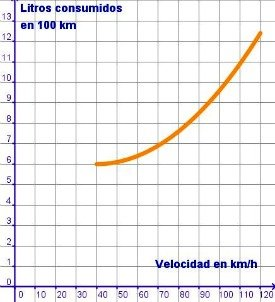
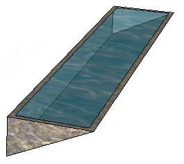

3.1. Función real de variable real
 |
| Imagen de elaboración propia |
En el blog de el diario El País, ecolab, que se comenta en el apartado anterior, se decía que el consumo de gasolina en un automóvil es proporcional al cuadrado de la velocidad a la que se desplaza. En otro blog, Eficiencia Energética, hay publicado un artículo dedicado a este mismo tema: Eco-conducción, claves para una conducción más económica y ecológica.
En él, aparece una gráfica que expresa la relación que existe entre estas dos variables: velocidad y consumo de combustible. Aunque existen otros factores a tener en cuenta además de la velocidad, peso del vehículo, marcha a la que se circula, diseño aerodinámico, modelo del automóvil; la forma de la gráfica es muy similar.
Evidentemente, esa gráfica expresa una relación funcional, o función, entre dos variables: velocidad en km/h y litros consumidos a esa velocidad en \(100 \ km\). Mirando con detenimiento la gráfica, podemos saber aproximadamente cuántos litros se consumen a una determinada velocidad. Pero, podemos saber el valor exacto del consumo cuando se circula a \(60 \ km/h\)? ¿\(6,3\) ó \(6,2\) litros?
Hemos visto que las relaciones funcionales las podemos expresar mediante gráficas, tablas o enunciados, pero la forma más común de hacerlo es mediante fórmulas o expresiones analíticas. Por ejemplo, La función de la gráfica se expresa mediante la siguiente fórmula: \[y=0.001·\left(x-40\right)^2+6\]
En esa fórmula, \(\mathbf{x}\) representa la variable independiente, es decir, la velocidad en \(km/h\); e \(\mathbf{y}\) representa la variable dependiente, los litros consumidos en \(100 \ km\).
Comprueba lo aprendido
Definiciones
|
Se llama función real de variable real a una relación que asocia a un número \(x\) de un conjunto inicial, otro número \(y\) de un conjunto final. El número \(y\) es único, es decir, a \(x\) no se le puede asociar más de un número. A las funciones se les suele llamar \(f\), y la relación se expresa de la siguiente manera: \(y = f(x)\). |
La relación que existe entre la velocidad y el combustible consumido es una función, pues a cada velocidad sólo le corresponde una única cantidad de litros consumidos. Dicha función la podemos escribir \[f(x)=0.001·\left(x-40\right)^2+6\] Y, por ejemplo, los litros que se gastan a los \(100 \ km\) si se circula a \(40 \ km/h\), se pueden expresar \(f(40)=6\).
Casi todos los ejemplos de relaciones que se han visto en el tema corresponden a funciones. Hagamos memoria: a cada hora del día le corresponde una única altura del mar, a cada segundo se le asocia un único pulso cardíaco, a cada altura de la piscina le corresponde una única cantidad de metros cúbicos en ella.
Sólo hay un caso de relación que no es funcional, el del ejemplo de los minutos jugados y puntos conseguidos por un jugador de baloncesto. Puede haber dos jugadores con el mismo tiempo de juego y distintas puntuaciones. Luego a \(x\)="tiempo jugado", no le corresponde una única \(y\)="puntos obtenidos".
Comprueba lo aprendido

¿Recuerdas la empresa dedicada al abastecimiento y saneamiento de aguas? Seguro que sí. En la estación de depuración había tres piscinas. En un apartado anterior ya hablamos de la piscina 1, ahora vamos a centrar nuestra atención en la piscina 2. Esta piscina (imagen de la izquierda), mide 50 metros de largo, 10 de ancho y 5 de profundidad. En la escena GeoGebra que aparece a continuación, se puede ver el frente de la piscina que tiene forma triangular. En la gráfica que le acompaña, se puede apreciar cómo varían los litros que hay en la piscina (medidos en metros cúbicos) en función de la altura que tiene el agua (medida en metros).Para iniciar el proceso de llenado debes hacer clic en el control inferior izquierdo de la escena. Este control también te permite detener el llenado en cualquier momento.
Llamamos f a la función que relaciona la altura x del agua de la piscina, con los metros cúbicos de agua y que tiene la piscina para esa altura. Nos preguntamos cuál de las expresiones siguientes corresponde a la fórmula de f.